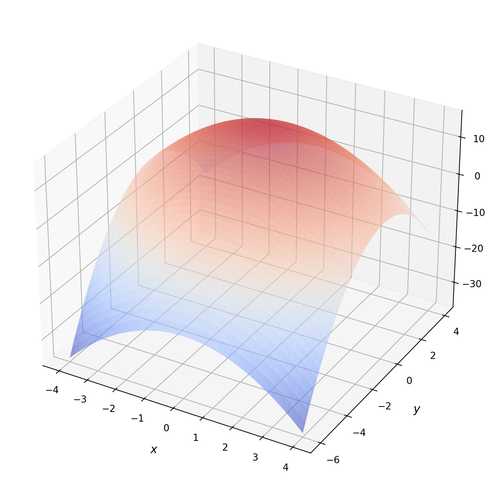
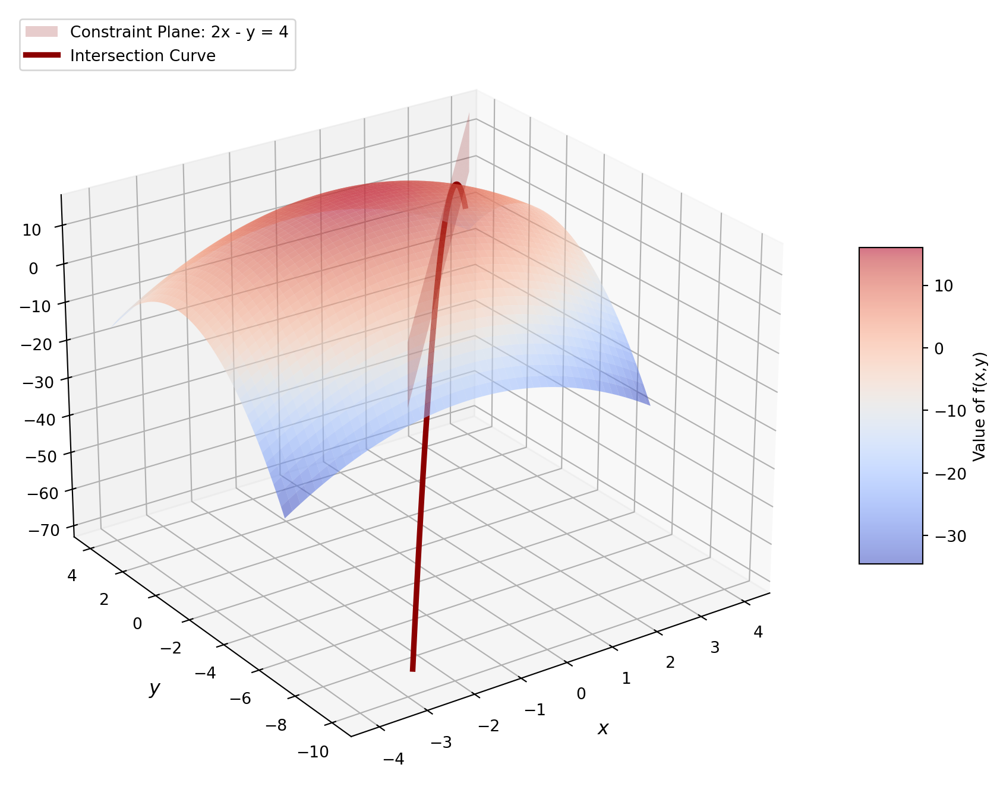

Optimization Example with Constraints and Lagrange Multipliers
Computational Models
Step-by-step resolution example of a constrained optimization problem using the Lagrange Multipliers method from two approaches: primal and dual approach.
Primal Problem (KKT Conditions). We simultaneously solve the entire system of equations describing the intersection point between the objective function and the constraint.
We derive the Lagrangian function \(\mathcal{L}(x,y,\lambda)\) with respect to all its variables (\(x\), \(y\), and \(\lambda\)) and set them to zero.
We solve for the primal variables (\(x\) and \(y\)) in terms of the multiplier (\(\lambda\)), substitute them into the constraint equation to find the numerical value of \(\lambda^*\), and finally obtain the optimal point \((x^*, y^*)\). Interpretation: You tackle the problem directly by solving the simultaneous equation system that dictates the tangency point between the level curves of the objective function and the constraint.
Dual Problem (Minimization of the Dual Function). We decompose the problem into two parts (as indicated by the dual problem \(\min_\lambda \max_{x,y} \mathcal{L}\)):
Inner maximization: analytically find how \(x\) and \(y\) behave as a function of \(\lambda\) by maximizing the Lagrangian, which allows you to construct the dual function \(g(\lambda)\).
Outer minimization: minimize the dual function \(g(\lambda)\) with respect to \(\lambda\) to find the optimal multiplier \(\lambda^*\).
1. Problem Definition
Objective function to maximize:
\[f(x, y) = 16 - (x^2 + y^2)\]
show code
import numpy as npimport matplotlib.pyplot as plt# Create 3D figurefig = plt.figure(figsize=(13, 9))ax = fig.add_subplot(111, projection='3d')# 1. Full surface of the paraboloid f(x,y) = 16 - (x^2 + y^2)x = np.linspace(-4, 4, 100)y = np.linspace(-6, 4, 100)X, Y = np.meshgrid(x, y)Z =16- (X**2+ Y**2)# Plot objective surfacesurf = ax.plot_surface(X, Y, Z, cmap='coolwarm', alpha=0.55, edgecolor='none', antialiased=True)# Axis labels and formattingax.set_xlabel('$x$', fontsize=12, fontweight='bold', labelpad=10)ax.set_ylabel('$y$', fontsize=12, fontweight='bold', labelpad=10)ax.set_zlabel('$z=f(x, y)$', fontsize=12, fontweight='bold', labelpad=10)# Add color bar and legend#fig.colorbar(surf, shrink=0.4, aspect=5, label='Value of f(x,y)')#ax.legend(loc='upper left', fontsize=10)plt.show()

Constraint function:
\[g(x, y) = 2x - y = 4 \implies 2x - y - 4 = 0\]
show code
import numpy as npimport matplotlib.pyplot as plt# Create 3D figurefig = plt.figure(figsize=(13, 9))ax = fig.add_subplot(111, projection='3d')# 1. Full surface of the paraboloid f(x,y) = 16 - (x^2 + y^2)x = np.linspace(-4, 4, 100)y = np.linspace(-6, 4, 100)X, Y = np.meshgrid(x, y)Z =16- (X**2+ Y**2)# Plot objective surfacesurf = ax.plot_surface(X, Y, Z, cmap='coolwarm', alpha=0.55, edgecolor='none', antialiased=True)# 2. Transparent vertical plane for the constraint: 2x - y = 4 => y = 2x - 4# Since the plane is vertical (independent of z), we use a mesh in X and Z.x_plane = np.linspace(-3, 4, 50)z_plane = np.linspace(0, 16, 50)X_pl, Z_pl = np.meshgrid(x_plane, z_plane)Y_pl =2* X_pl -4# Plot transparent constraint planeax.plot_surface(X_pl, Y_pl, Z_pl, color='red', alpha=0.2, edgecolor='none', label='Constraint Plane: 2x - y = 4')# 3. Intersection curve (constraint projected onto the surface)x_constr = np.linspace(-2.5, 3.5, 100)y_constr =2* x_constr -4z_constr =16- (x_constr**2+ y_constr**2)ax.plot(x_constr, y_constr, z_constr, color='darkred', linewidth=3.5, label='Intersection Curve')# Axis labels and formattingax.set_xlabel('$x$', fontsize=12, fontweight='bold', labelpad=10)ax.set_ylabel('$y$', fontsize=12, fontweight='bold', labelpad=10)ax.set_zlabel('$z=f(x, y)$', fontsize=12, fontweight='bold', labelpad=10)#ax.set_title('Surface, Constraint Plane, and Optimal Point (Lagrange)', fontsize=14, fontweight='bold')# Add color bar and legendfig.colorbar(surf, shrink=0.4, aspect=5, label='Value of f(x,y)')ax.legend(loc='upper left', fontsize=10)# Adjust camera perspective to appreciate the plane cutting the paraboloidax.view_init(elev=25, azim=-125)plt.show()

Lagrangian function:
\[\mathcal{L}(x, y, \lambda) = 16 - (x^2 + y^2) + \lambda(2x - y - 4)\]
2. Primal Solution via Lagrange Multipliers
To find the critical points, we set the partial derivatives of \(\mathcal{L}(x, y, \lambda)\) to zero:
Optimal Point: \((x^*, y^*) = (1.6, -0.8)\) or \(\left(\frac{8}{5}, -\frac{4}{5}\right)\)
Optimal Lagrange Multiplier: \(\lambda^* = 1.6\) or \(\frac{8}{5}\)
Maximum Value Achieved: \(f(x^*, y^*) = 12.8\) or \(\frac{64}{5}\)
The primal and dual solutions coincide because the objective function is convex and the constraint is linear, which satisfies strong duality (the duality gap is zero).More information at https://en.wikipedia.org/wiki/Duality_(optimization)
Solution Visualization
show code
import numpy as npimport matplotlib.pyplot as plt# Create 3D figurefig = plt.figure(figsize=(13, 9))ax = fig.add_subplot(111, projection='3d')# 1. Full surface of the paraboloid f(x,y) = 16 - (x^2 + y^2)x = np.linspace(-4, 4, 100)y = np.linspace(-6, 4, 100)X, Y = np.meshgrid(x, y)Z =16- (X**2+ Y**2)# Plot objective surfacesurf = ax.plot_surface(X, Y, Z, cmap='coolwarm', alpha=0.55, edgecolor='none', antialiased=True)# 2. Transparent vertical plane for the constraint: 2x - y = 4 => y = 2x - 4# Since the plane is vertical (independent of z), we use a mesh in X and Z.x_plane = np.linspace(-3, 4, 50)z_plane = np.linspace(0, 16, 50)X_pl, Z_pl = np.meshgrid(x_plane, z_plane)Y_pl =2* X_pl -4# Plot transparent constraint planeax.plot_surface(X_pl, Y_pl, Z_pl, color='red', alpha=0.2, edgecolor='none', label='Constraint Plane: 2x - y = 4')# 3. Intersection curve (constraint projected onto the surface)x_constr = np.linspace(-2.5, 3.5, 100)y_constr =2* x_constr -4z_constr =16- (x_constr**2+ y_constr**2)ax.plot(x_constr, y_constr, z_constr, color='darkred', linewidth=3.5, label='Intersection Curve')# 4. Optimal point found: (1.6, -0.8, 12.8)x_opt =1.6y_opt =-0.8z_opt =16- (x_opt**2+ y_opt**2)# Mark the optimal pointax.scatter([x_opt], [y_opt], [z_opt], color='gold', s=220, zorder=5, edgecolors='black', label=f'Optimal Point P* ({x_opt}, {y_opt}, {z_opt})')# Dashed line from the optimal point to the XY plane for visual referenceax.plot([x_opt, x_opt], [y_opt, y_opt], [0, z_opt], color='black', linestyle='--', linewidth=1.5, alpha=0.7)# Axis labels and formattingax.set_xlabel('$x$', fontsize=12, fontweight='bold', labelpad=10)ax.set_ylabel('$y$', fontsize=12, fontweight='bold', labelpad=10)ax.set_zlabel('$z=f(x, y)$', fontsize=12, fontweight='bold', labelpad=10)#ax.set_title('Surface, Constraint Plane, and Optimal Point (Lagrange)', fontsize=14, fontweight='bold')# Add color bar and legendfig.colorbar(surf, shrink=0.4, aspect=5, label='Value of f(x,y)')ax.legend(loc='upper left', fontsize=10)# Adjust camera perspective to appreciate the plane cutting the paraboloidax.view_init(elev=25, azim=-125)plt.show()